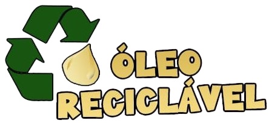

R. Pedro Rissato, 30 - Vila dos Remédios, Osasco - SP, 06296-220

Início
Ciclo do Óleo
Pontos de Coleta
Contato
Ciclo do Óleo
Passo a Passo para Descartar Óleo de Cozinha
Produtos Gerados pela Reciclagem do Óleo de Cozinha
Transformando Óleo de Cozinha em Sabão